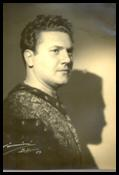
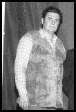
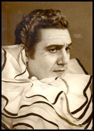
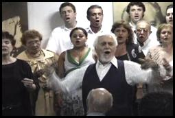
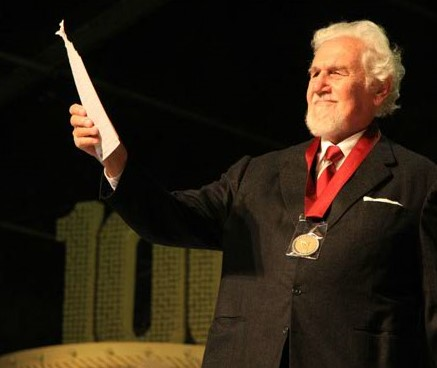

Alfredo Cololosimo nasceu no Rio Janeiro, filho de imigrantes italianos, Francesco Colosimo e Rosina Maria Mulfetti Colosimo, era o 4º. de 6 irmãos. Veio à luz na casa no. 97 da Rua Visconde de Itaúna, (hoje desaparecida) , no centro da cidade.
Contam que muito cedo, já aos 8 anos, mostrava aptidão para o canto, imitando sem parar, as canções da época que ouvia no rádio nas vozes de Vicente Celestino, Gigli, Carlo Buti, Pedro Vargas ou Tito Schipa. Aos 13 anos começou a estudar violão (estudou durante 5 anos) para poder acompanhar-se cantando.
Fez seus estudos na escola “Principe di Piemonte all´estero” (escola italiana do Rio de Janeiro).
Seu primeiro trabalho foi como aprendiz na oficina mecânica de sua família, na qual seguiu até 1963.
Em 1940 apresentou-se ao Tiro de Guerra para cumprir suas obrigações militares. Nas horas livres sua voz fazia sucesso entre seus colegas e superiores.
E, pouco a pouco, a voz primeiro infantil e jovem foi transformando-se numa bela e adulta voz de tenor.
Em 1941, aos 18 anos, iniciou seu aprendizado formal de canto com o Professor Pedro Lopes Moreira com o qual permaneceu 5 anos.
Foi num recital de seus alunos que, em 1944, aos 21 anos, apresentou-se pela primeira vez ante o público, no Auditório da Escola Nacional de Música, na Rua do Passeio.
Em 1947 passou para o estúdio de canto do Professor, Tenor Pasquale Gambardella – cantor lírico italiano que radicou-se no Brasil trazendo sua vasta experiência em técnica vocal -. Gambardella influenciou muito a vida e a carreira de Alfredo Colosimo que permaneceu sob sua orientação e conselhos durante 21 anos, mesmo após ter-se tornado um consagrado artista. O Maestro Gambardella faleceu em 1968.
Paralelamente aperfeiçoou-se em arte cênica e declamação lírica dirigido por Emma Leblanc Papin tendo frequentado também a Academia de Teatro de Dulcina para classes de arte dramática.
Posteriormente, formou-se com o título de Bacharel em Canto, pela Academia de Música Lorenzo Fernandez (Rua da Lapa, 120/7º andar).
Em 5 de maio 1949, aos 26 anos incompletos, Colosimo debutou na ópera no papel de Pinkerton, da Madama Butterfly de Puccini, no Teatro República,sob a regência do Maestro Werther Politano. A ópera era uma realização do Teatro Experimental de Ópera criado pelo Embaixador Pachoal Carlos Magno para jovens artistas líricos.
Em 19 de abril 1950,após ter sido aprovado numa prova onde fora inscrito,sem seu conhecimento, por seus colegas do estúdio do Professor Gambardella, Alfredo Colosimo fez sua estréia profissional no Theatro Municipal do Rio de Janeiro, como Manrico, na ópera Il Trovatore de Verdi e, logo a seguir, foi-lhe confiado o papel de Paolo, na ópera Fosca de Carlos Gomes.
Era o início de uma longa parceria entre o tenor e o Theatro Muncipal onde também cantaria seu ultimo papel em 2002, 52 anos depois.
No ano seguinte, em 1951, debutou no Theatro Muncipal de São Paulo cantando o Duque de Mantua no Rigoletto de Verdi.
A partir deste momento sua carreira estava lançada.
Ampliou seu repertório e começou a ser contratado, exaustivamente, por vários teatros em inúmeras cidades de seu país.
Seu repertório incluía: de Puccini:Gianni Schicchi (Rinuccio), Tosca (Cavaradossi), La Bohème (Rodolfo), Butterfly (Pinkerton), e mais tarde Turandot (Altoum); de Verdi: Rigoletto (Duque), Aida (Radamés), Il Trovatore (Manrico), (em 1953, nas comemorações do centenário da ópera, escolhido para interpretá-la no Theatro Municipal do RJ) - Traviata (Alfredo), La Forza del destino (Alvaro), Ballo in Maschera (Riccardo); Giordano: Andréa Chenier ((Chenier); Mascagni: Cavalleria Rusticana (Turiddu); Gounod: Faust (Faust); Leoncavallo: Pagliacci (Canio); Zazà (Milio); Moussorgsky: Khovantchina (Príncipe André); Bizet:: Carmen (Don José); Cilea; Adriana Lecouvreur (Maurizio); Pizzetti: Assassinato na Catedral (Arauto); Flotow: Martha (Lionel); Donizetti: Don Pasquale (Ernesto); Antonio Massana: Juca Pirama e Massimo il giuliare.
Óperas nacionais: Carlos Gomes: Lo Schiavo (Americo), Fosca (Paolo), Il Guarani (Peri); Henrique Oswald; Il Neo; Francisco Mignone; L´Innocente (Andrea), O contratador de diamantes (Camacho); Villa Lobos: Izaht – estréia cênica mundial – (Visconde de Gamart); Delgado de Carvalho: Moema – cantada nas comemorações do cinquentenário do Theatro Muncipal - (Paulo) – José Siqueira: A compadecida – estréia mundial – (criando o papel do Padre João) – Oscar Lorenzo Fernandez: Malazarte (Eduardo).
Também interpretou a parte do tenor na 9ª. Sinfonia de Beethoven e no Requiem de Verdi e o de Fernando no poema vocal sinfônico Colombo de Carlos Gomes.
Regentes: Colosimo atuou sob a batuta de inúmeros regentes entre os quais: Werther Politano, Santiago Guerra, Henrique Morelenbaum José Torre, Nino Gaione, Nino Stinco, Mario de Bruno. Edoardo Guarnieri, Nino Verchi, Hugo Balzer, Francisco Mignone, Vicenzo Bellezza, Eleazar de Carvalho, Armando Belardi, José Siqueira, Conrad Bernard,Luciano Bareni, Manrico de Tura e Rino Castagnino, André Vivante, Romano Gandolfi e Silvio Barbato.
Exterior: em 1959 viajou ,contratado, a Buenos Aires para interpretar no Teatro Colón várias récitas das óperas Pagliacci e Il Trovatore.
Em 1962 - junho e julho -. acompanhou uma turnê de artistas brasileiros apresentando-se na Colômbia (Bogotá, Calí, Medelin), com o repertório: Bohème, Rigoletto e Madama Butterfly.
Em 1964 seguiu para a Itália onde permaneceu 20 meses, até 1965, e onde cantou em diversas cidades: Vicenza (Il Trovatore), Biella (Pagliacci e Il Trovatore), Fidenza (Il Trovatore), Tortona (Andréa Chenier) substituindo o tenor Giuseppe Campora, Parma (concerto), Milão (concerto), Sorogno (concerto)
Em 1965, foi contratado para cantar em Munique, na Alemanha, 6 récitas de Il Trovatore que apresentou no Deutsches Theater München, de 20 a 29 de abril.
Outros: em 1962 participou da Caravana da Cultura, projeto itinerante de cultura e arte idealizado pelo Embaixador Carlos Magno que percorreu os estados do Rio, Minas, Bahia, Sergipe e Alagoas apresentando espetáculos de música, teatro e dança.
Ao mesmo tempo que prosseguia sua carreira operística, paralelamente desenvolvia uma ativa carreira de concertos e recitais (onde muitas vezes apresentava celebres canções napolitanas que tinham sempre um enorme sucesso), além de comparecimentos na rádio e na TV tanto no Rio como em outras cidades brasileiras.
Seu nome sempre ficará associado ao personagem de Americo, do Schiavo, e sua ária “Quando nascesti tu” e à sua impressionante caracterização dramática e vocal de Canio nos Palhaços. E, podemos dizer que, pela emoção e intensidade de suas representações, pela sua musicalidade e sua técnica, pelo seu legato e sua perfeita dicção, pelo seu carisma, se estabeleceu entre os grandes tenores brasileiros de sua geração e, certamente, se encontra registrado nos anais da música operística brasileira da segunda metade do século XX.
Com o desaparecimento de Pasquale Gambardella, em 1968, seus numerosos alunos pediram a Colosimo que fosse seu substituto pois conhecia profundamente sua técnica. Ele aceitou a missão começando a ministrar aulas particulares aos seus colegas.
Em 5 de janeiro 1969, ingressou no corpo docente da Academia de Música Lorenzo Fernandez. Colosimo permaneceu na Lorenzo Fernandez 40 anos, trabalhando ativamente, até o dia 24 de agosto 2009, 3 dias antes de seu falecimento.
Em 1985 ingressou na Universidade Estácio de Sá (Rua do Bispo, 83), como Professor de canto e declamação lírica.. Ali trabalhou 13 anos, até 1998, quando os cursos de músicas foram extintos.
Em 1997 ministrou um master class aos alunos de música da Academia de Música Lorenzo Fernández.
Seus recitais de alunos no fim de cada ano letivo, que preparava com enorme entusiasmo e dedicação, chegavam a ser um acontecimento que lotava o auditório da Academia e no final dos quais sempre brindava ao público uma canção na sua interpretação.
Foi professor de numerosos cantores líricos brasileiros, muitos deles, atualmente, pertencem ao Coro do Theatro Muncipal do Rio de Janeiro. Outros, hoje, tem nome destacado na lírica internacional: Fernando Portari (que guiou em seus primeiros passos) e Rodrigo Esteves, seu aluno na Universidade Estácio de Sá.
Alfredo Colosimo adorava lecionar. Competente e experiente, conhecia a voz como ninguém e era o transmissor de uma técnica impecável.
Considerava cada aluno único e iniciava cada um na difícil arte do canto com o mesmo entusiasmo e incansável paciência.,sempre alegre, bem humorado, de bem com a vida. Pela sua personalidade e seu legado foi Mestre inesquecível por todos que tiveram a oportunidade de estudar com ele.
Em setembro 1993, aos 70 anos, foi convidado para interpretar o papel do Imperador Altoum, na ópera Turandot de Puccini, (papel tradicionalmente oferecido a grandes tenores para homenageá-los), numa grandiosa montagem ao ar livre, na Praça da Apoteose no Rio de Janeiro, sob a regência de Romano Gandolfi.
Em 28 de outubro 1999 foi homenageado com um recital, “Uma noite italiana” pelo Centro Cultural Gama Filho, da Universidade Gama Filho, onde também foi chamado ao palco para interpretar algumas canções.
Em abril 2002, aos 78 anos, como “homenagem do Theatro Municipal ao tenor Alfredo Colosimo” (segundo constou do programa), voltou a cantar o papel de Altoum em 4 récitas. A regência coube ao Maestro Silvio Barbato. Foi sua última apresentação no Municipal onde havia iniciado sua carreira em 1950.
Em 19 de abril 2004 foi convidado a ir a Brasília para um jantar-homenagem à sua brilhante carreira oferecido pelo ”Rotary Brasília 21 de abril” e onde, ao final, ofertou aos presentes o brindisi da Traviata.
Em 19 de setembro 2004 viajou a São Paulo, para uma homenagem no Festival Internacional da Cia. de Ópera São Paulo, no Teatro São Pedro. Ao mesmo tempo participou do júri para a escolha dos intérpretes para a ópera, “O Barbeiro de Sevilha”.
Em 26 de novembro 2004 foi homenageado pela Dell´Arte no Museu da República “por uma vida dedicada à música” onde foram passados slides de sua vida e carreira e várias de suas interpretações, recebendo, no final uma placa comemorativa.
Em 10 de outubro 2008,aos 85 anos, junto ao soprano Fernanda Schleder, acompanhados ao piano por Cláudio Vettori, apresentou-se num recital na série “Música no Museu”, no auditório do Centro Cultural Justiça Federal.
Em 14 de julho 2009 recebeu a medalha dos 100 anos do Theatro Muncipal concedida a pessoas que se destacaram ao longo dos anos na vida artística do Theatro. Convém lembrar que o tenor estava presente no cinquentenário do Theatro, no palco, cantando a ópera Moema, de Delgado de Carvalho.
Em 1º. de agosto 2009, aos 85 anos, no auditório da Academia de Música Lorenzo Fernandez, junto ao pianista João Carlos de Assis Brasil e o violonista Toninho Pereira ofereceu um recital onde interpretou 7 canções italianas.
14 de agosto 2009. Costumava, periodicamente, exercitar sua voz, com um pianista, após as aulas diárias, em sua sala na Academia de Música Lorenzo Fernandez, com a presença de algumas pessoas. Neste dia 14, acompanhado por João Carlos de Assis Brasil cantou canções e árias. Sendo a ária “E lucevan le stelle” da ópera Tosca de Puccini a última peça que interpretou. O ensaio foi registrado, gravado, por uma de suas alunas. Foi a derradeira vez que cantou.
Alfredo Colosimo faleceu na madrugada de 27 de agosto 2009 após ter sofrido um enfarto na noite de 25. Tinha 85 anos, completaria 86 no mês seguinte.
“O dom do canto é um dom eterno, sei que, do outro lado da vida irei ainda cantar”